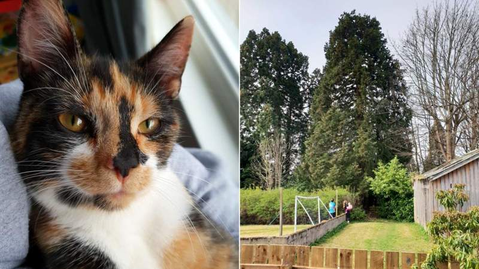

An extreme case of social distancing?
A young pet cat sparked a major rescue effort after getting stuck 80ft (24m) up a tree for 40 hours. Eight-month-old Scout went missing in Torphins, Aberdeenshire, on Thursday night. The following morning she was spotted at the top of what owner Bethan Starling said is thought to be the village's oldest and tallest tree. A climber, tree surgeons and a cherry picker were all called in to no avail, and she was finally coaxed down after a two-night adventure.